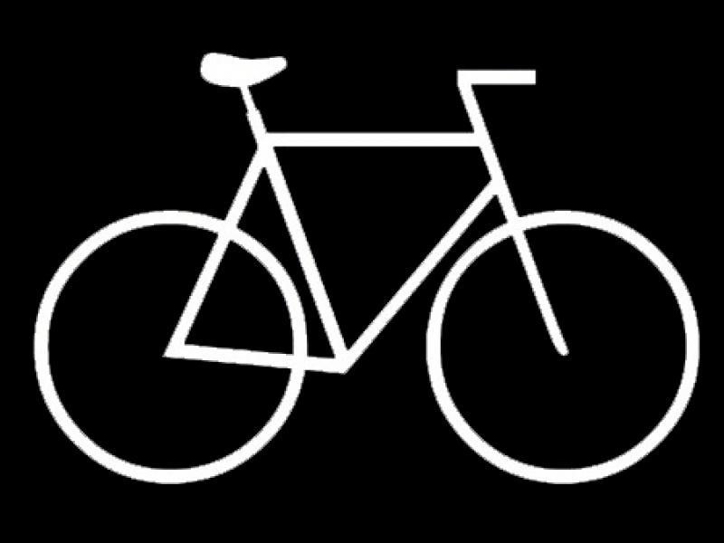

La Fixie es una monomarcha, con piñón fijo y sin freno. Así pues es una bicicleta sin marchas, con una sola transmisión y sin punto muerto, así que el pedal girará siempre que gire la rueda, a cualquier velocidad. Y se frena con los pedales, ejerciendo contrapresión con los pies en los mismos para reducir su velocidad o para bloquear completamente la rueda trasera y para derrapar. Presentan el mismo principio que las bicicletas de pista, que tienen una forma parecida a las bicicletas de carreras para favorecer una postura inclinada. Así que Seabase va en bicicleta, pero por la calle, por eso una Fixie.
saludable
no contamina
económica